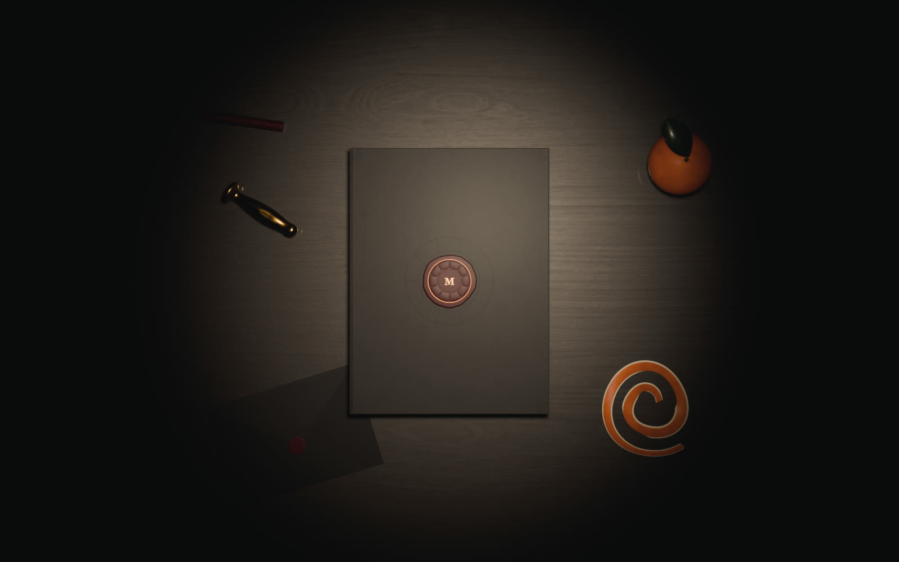
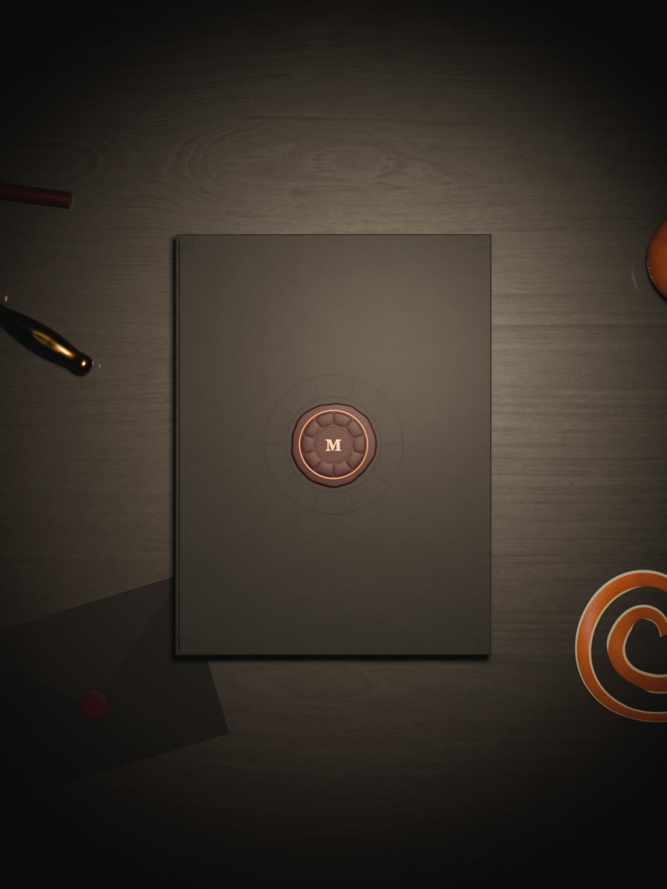
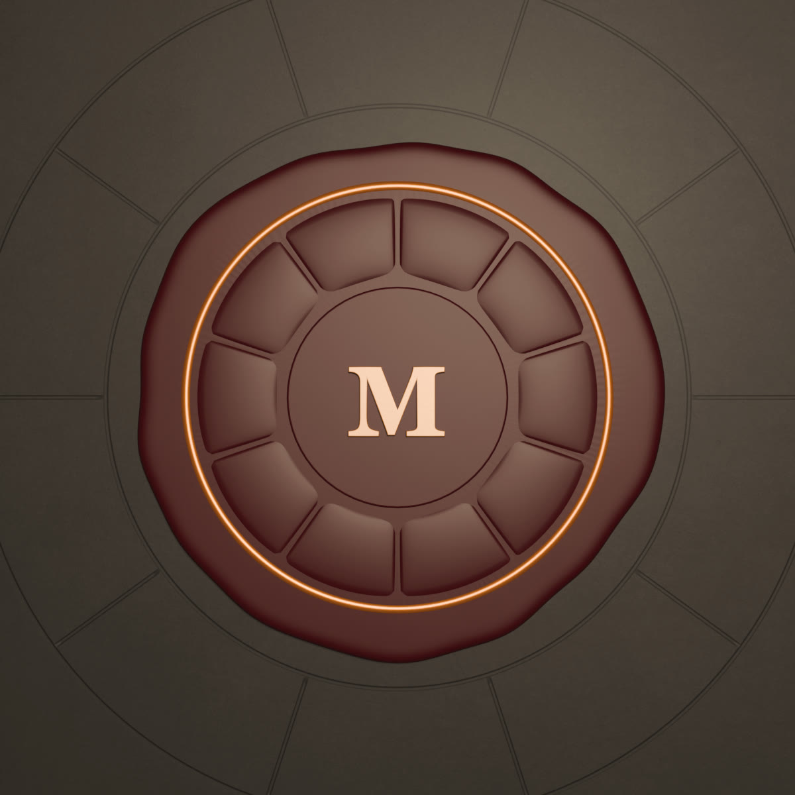
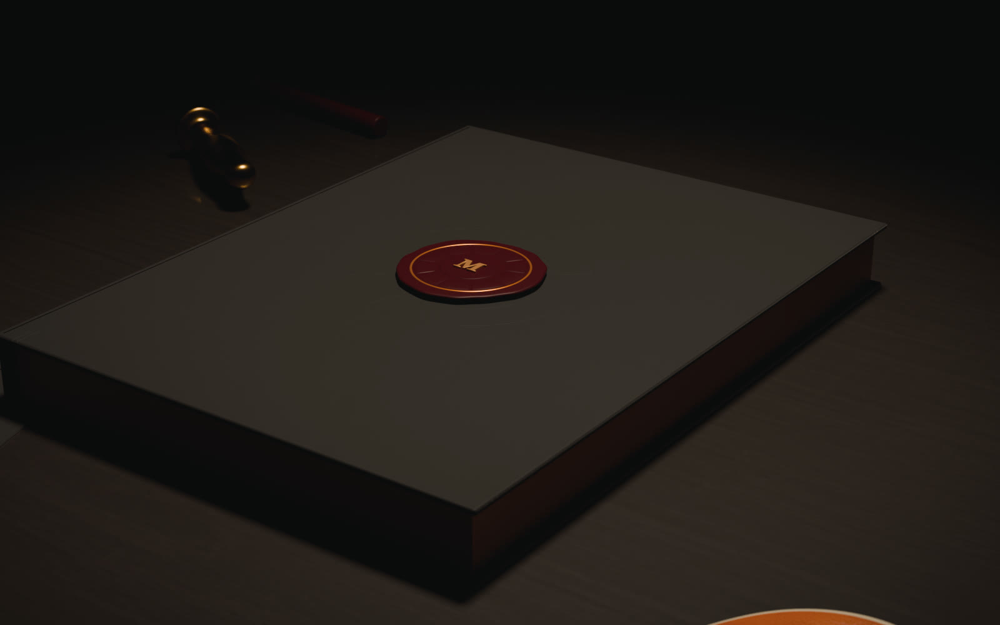

Look development, pass 5
The desk scene built in Blender with free CC0 materials, rendered on this machine's GPU (about 15 s per frame). One scene feeds all three routes: still images for the home, baked textures for the live book, and the hybrid of both. Work in progress: the next passes add a rim light on the gilt edges, the Fraunces M, more leather grain, wax imperfections, and then the animations.



